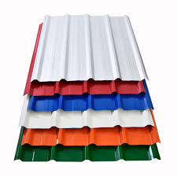
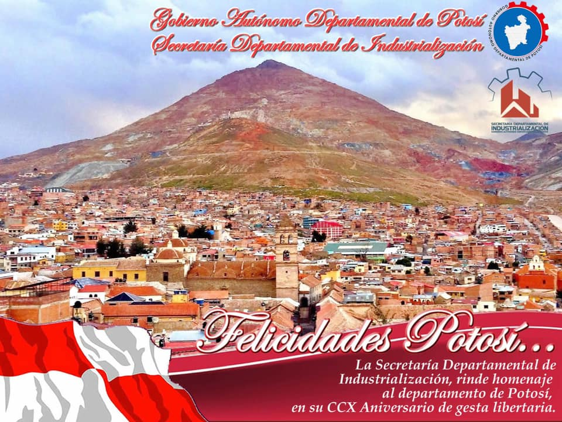

CALAMINA TRAPEZOIDAL

Calamina Trapezoidal Proporciona una geometría trapezoidal reforzada, de fácil instalación y sofisticada estética para su cubierta. Su aplicación es ideal para gasolineras, bodegas y cualquier tipo de estructura industrial. Colores Terminados CATEGORIES: TERMINADO GALVANIZADO, TERMINADO MATE "LUXE", TERMINADO PRE-PINTADO, TERMINADO ZINCALUM
